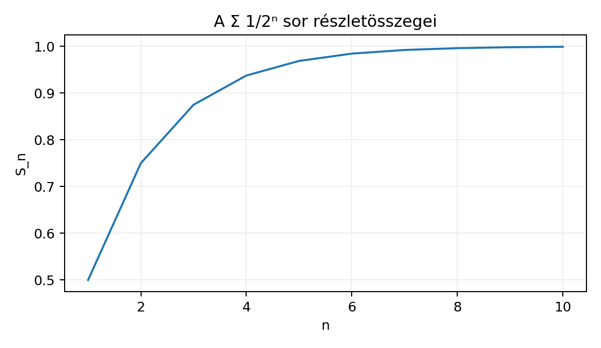

7.1 A végtelen sor fogalma: mértani
és teleszkópos sorok
7.1.1 Motiváció
Az előző fejezetekben megtanultuk, hogyan viselkednek a sorozatok a
végtelenben, és hogyan számolhatjuk ki a határértéküket. A matematikában
és a természettudományokban mégis az egyik leggyakoribb kérdés az,
amikor végtelen sok számot szeretnénk összeadni.
Gondoljunk Zénón paradoxonára: egy futónak, hogy megtegyen 100
métert, először 50 métert kell futnia, majd 25-öt, majd 12,5-öt, és így
tovább. A megtett út így:
Hogyan lehet ennek a végtelen összegnek pontosan 100 méter az
eredménye? A végtelen sor fogalma erre ad precíz matematikai választ.
Hasonló kérdés merül fel, ha egy ismételten adagolt gyógyszer
vérszintjét akarjuk meghatározni, elegánsabb módon, mint a rekurzív
sorozatokkal való hosszadalmas számolással.
7.1.2 Szemléletes kép
Képzeljünk el egy 1 területű négyzetet. Fessük be a felét sötétre,
majd a maradék felét sötétre, és így tovább.
Minden lépésben a maradék terület felét színezzük be. Szemléletesen
látható, hogy a befestett terület egyre közelebb kerül az 1-hez, de soha
nem haladja meg azt; a határértéke az 1. A részletösszegeket egy
táblázat is jól mutatja:
Közelítés
1
2
3
4
5
A minta világos: a részletösszegek
alakúak, és
-hez
tartanak. Ezt a megfigyelést foglaljuk most formális keretbe.
7.1.3 A végtelen sor fogalma
A definícióhoz az előző alfejezetekben már jól bevált módszerhez
folyamodunk: a végtelen sok tag összeadását visszavezetjük egy sorozat
határértékére.
Definíció. Legyen
egy valós (vagy komplex) sorozat. Ehhez képezzük az úgynevezett
részletösszegek (partial sums) sorozatát:
Ha az
részletösszeg-sorozat konvergens, és a határértéke
,
akkor azt mondjuk, hogy a
végtelen sor (infinite series)
konvergens, és az összege (sum)
.
Ezt így jelöljük:
Ha az
sorozat divergens, akkor a végtelen sor divergens.
Megjegyzés. Fontos észrevenni, hogy az
egy sorozat, míg az
ennek a sorozatnak a határértéke. Ez a két fogalom néha összemosódik, de
létfontosságú a megkülönböztetésük.
7.1.4 Példa és első
tapasztalat
Példa. Tekintsük a
sort. A részletösszegek:
A mértani sorozat összegképlete alapján, kiemelve
-et:
Mivel
,
ezért
7.1.5 A mértani sor
A fenti gondolatmenet teljesen általánossá tehető.
Tétel (Mértani sor konvergenciája). Legyen
(vagy
).
A
mértani sor (geometric series) akkor és csak akkor konvergens, ha
.
Ekkor az összege:
Ha
,
akkor a sor divergens.
Bizonyítás. Első lépés: A részletösszeg zárt alakja. Legyen
.
Szorozzuk meg mindkét oldalt
-val:
Vonjuk ki az első egyenletből a másodikat. A közbülső tagok kiejtik
egymást:
Ha
(valós vagy komplex
),
akkor
minden
-re.
Ha az
sorozat konvergálna, akkor
nullához tartana, ami
miatt lehetetlen; tehát a sor divergens. (Például
esetén
,
esetén
értéke
és
között ugrál,
esetén pedig
periodikusan ismétlődik.) Ezzel a tételt bebizonyítottuk. ∎
Figyelem. A gyakorlatban sokszor használjuk a sort
eltolva, pl.
(itt az első tag
).
Mivel ez ugyanaz a sor, az összege szintén
.
Ha viszont az első tag nem 1, hanem
,
akkor az összeg
.
Kidolgozott példa (Mértani sor). Számítsuk ki a
sor összegét!
Megoldás. Alakítsuk át a tagot, hogy látszódjon a mértani
jelleg:
Itt
és az első tag
.
Másik megközelítéssel, emeljük ki az első tagot a sor összegéből:
Ellenőrzés: Számoljunk részletösszegekkel:
,
,
.
A sor összege
,
a részletösszegek alulról közelítenek hozzá.
7.1.6 Teleszkópos sorok
A másik sorozattípus, ahol a kifejtés általában egyszerű, amikor a
tagokat egymásból kiejtő különbségek alakjában írhatjuk fel.
Definíció. Teleszkópos sornak nevezzük az olyan
sort, ahol az
tag felírható
alakban valamilyen
sorozattal. Ekkor a részletösszeg:
Ha a
sorozat konvergens, akkor a sor összege
.
Kidolgozott példa (Teleszkópos sor). Számítsuk ki a
sor összegét!
Megoldás. Először bontsuk parciális törtekre a tagot:
Közös nevezőre hozva
.
Ebből
és
.
Tehát:
Legyen
.
Ekkor az
részletösszeg:
Az összegben a
tagok kiesnek:
Világos, hogy
,
tehát
Ellenőrzés: Számoljuk ki az első pár részletösszeget:
,
,
.
A minta
,
ami valóban
-hez
tart.
7.1.7 A konvergencia szükséges
feltétele
Az eddigi példáinkban a tagok
()
nullához tartottak. Ez nem véletlen.
Tétel (A konvergencia szükséges feltétele). Ha a
sor konvergens, akkor a tagjai nullához tartanak:
Bizonyítás.
Jelölje
a sor összegét, azaz
.
Ekkor a tag
-et
felírhatjuk két szomszédos részletösszeg különbségeként:
A határérték-műveletek alaptételei (lásd a Határérték-műveletek és a rendőrelv alfejezetet)
szerint a különbség határértéke a határértékek különbsége:
Ezzel az állítást beláttuk. ∎
Figyelem. Ez a feltétel szükséges, de nem
elégséges. Vannak olyan sorok, ahol
,
de a sor mégis divergens. A leghíresebb ilyen a harmonikus sor.
7.1.8 Ellenpélda: a harmonikus sor
divergenciája
Tétel (A harmonikus sor divergenciája). A
harmonikus sor divergens, annak ellenére, hogy a tagjai nullához
tartanak.
Bizonyítás (csoportosítással).
Írjuk fel a sort, és csoportosítsuk a tagokat a
-adik
hatványokig:
Mivel minden csoporton belül a nevező a csoport legnagyobb
nevezőjénél nem nagyobb, a tagok nagyobbak vagy egyenlők, mint a csoport
utolsó tagja. Például a harmadik csoportban:
Általánosan, a
-adik
csoport (amelyik a
-től
-ig
tart)
darab tagból áll, és mindegyik legalább
.
Így a csoport összege:
Így a harmonikus sor részletösszegei a
.
indexnél legalább
értékűek. Mivel ez a kifejezés
-mel
együtt a végtelenbe tart, az
sorozatnak nincs véges felső korlátja, tehát divergens. ∎
Az alábbi ábra bal oldala a csoportosítást mutatja az első 16 tagon:
a
-adik
blokk minden tagja legalább
(szaggatott szint), ezért a blokk összege legalább
;
a
blokkban például
.
A jobb oldal a részletösszegeket mutatja logaritmikus
-tengelyen:
,
,
vagyis a sor korlátlanul, de nagyon lassan nő, míg a
részletösszegei
alatt maradnak.
Statikus változat (mint a PDF-ben)
A harmonikus sor blokkjai és részletösszegei; számított
értékek
Következmény. Az, hogy a tagok nullához tartanak,
nem biztosíték a konvergenciára. Ezt az ellenpéldát
fontos megjegyezni.
7.1.9 A konvergencia szükséges
feltétele a gyakorlatban
A szükséges feltételt általában arra használjuk, hogy gyorsan
megmutassuk egy sor divergenciáját.
Példa. Vizsgáljuk a
sort. Mivel
a szükséges feltétel megsértése miatt a sor azonnal kimondhatóan
divergens, anélkül, hogy a részletösszegeket kellene vizsgálnunk.
7.1.10 Műveletek konvergens
sorokkal
A végtelen sorok összege a határérték-számításból örökli a műveleti
szabályokat.
Tétel (Műveletek konvergens sorokkal). Tegyük fel,
hogy
és
mindketten konvergensek. Ekkor:
A
sor konvergens, és az összege
.
Tetszőleges
(vagy
)
konstansra a
sor konvergens, és az összege
.
Bizonyítás. Az állítás közvetlen folyománya a
sorozatokra vonatkozó határérték-műveleti szabályoknak (lásd a Határérték-műveletek és a rendőrelv
alfejezetet).
Legyen
és
.
A két sor összegének
-edik
részletösszege
,
mert a tagokat felcserélhető módon, “tagonként” adhatjuk össze:
Mivel
és
,
a sorozatokra vonatkozó összeg-szabály szerint
.
A konstansszorosra vonatkozó szabály hasonlóan egyszerű: a
sor részletösszegei
,
és
.
∎
Kidolgozott példa (Műveletek). Számítsuk ki a
következő sor összegét:
Megoldás. Az első tag egy mértani sor, az első tag az
és
,
tehát az összege:
A második tag a korábban vizsgált teleszkópos sor, amelynek összege
szintén 1. A műveleti szabályt alkalmazva:
7.1.11 Számolási recept mértani
sorokra
Ha egy végtelen sorral találkozol, és felismered, hogy mértani:
Azonosítsd az első tagot
()
és a hányadost
().
Írd fel a tagot
(vagy
)
alakban.
Ellenőrizd a konvergencia feltételét:
.
Ha nem, a sor divergens.
Alkalmazd az összegképletet:
.
Ellenőrzés: Számítsd ki az első néhány
részletösszeget, és győződj meg róla, hogy azok tényleg a kapott
értékhez közelítenek.
Egy beteg naponta 100 mg-ot kap egy gyógyszerből. A szervezete a nap
végére a gyógyszer 80%-át kiüríti, tehát a korábbi mennyiség 20%-a
megmarad. Mennyi gyógyszer fog hosszú távon felhalmozódni a beteg
vérében?
Megoldás. Jelölje
a vérben lévő mennyiséget közvetlenül az
-edik
adag beadása után. Az első adag után
mg. A következő adagig a mennyiség 20%-a marad meg, ehhez jön az új 100
mg:
A harmadik adag után:
Ezt folytatva, az
-edik
adag után:
Ez egy mértani sor részletösszege, ahol az első tag
és a hányados
.
A hosszú távú (egyensúlyi) szint a végtelen sor összege, hiszen a
folyamat elvileg korlátlanul folytatódik:
Értelmezés. A vérszint nem fog a végtelenségig nőni, hanem
egy dinamikus egyensúly alakul ki, amelyet a mértani sor összege
pontosan megad. Az egyensúlyi csúcsszint (közvetlenül az adag után) 125
mg, a következő adag előtti mélypont
mg. A farmakokinetika ilyen egyszerűsített modellel becsli az ismételt
adagolás felhalmozódását.
A
egy határtalanul ismétlődő tizedestört. Bontsuk fel:
Ez egy mértani sor, ahol
és
.
Az összeg:
Így a
tizedestört pontosan a
racionális számot reprezentálja. Ezzel a módszerrel bármely periodikus
tizedestört racionális számmá alakítható, igazolva, hogy minden
periodikus tizedestört racionális szám. (A fordított irány – minden
racionális szám tizedestört-alakja periodikus – a maradékos osztásból
következik.)
7.1.13 Ábra: A mértani sor
konvergenciája
Az alábbi ábra a
sor
részletösszegeinek alakulását mutatja az
függvényében. Látható, ahogy a görbe az
-hez
simul.

A Σ 1/2ⁿ sor részletösszegei - A
részletösszegek az S_n = 1 - (1/2)^n képlettel számolva, 10
tizedesjegyre kerekítve; a határérték 1.
Az ábra jól mutatja a “konvergencia” szemléletes jelentését: az
sorozat előbb-utóbb tetszőlegesen közel kerül az összeghez, a
-hez,
és a távolság az
növelésével egyre kisebb lesz.
7.1.14 Tipikus hibák
A konvergencia szükséges feltételének megfordítása.
Sokan azt hiszik, ha
,
akkor a sor konvergens. Ahogy a harmonikus sornál láttuk, ez nem igaz: a
tagjai nullához tartanak, de a sor részösszegei a végtelenbe
tartanak.
A mértani sor képletének hibás alkalmazása
esetén. A
képletnek nincs értelme, ha a sor divergens. Mindig kell először
ellenőrizni, hogy
teljesül-e. Pl. a
sornál a képlet
hibás eredményt adna.
A részletösszeg és a tag összekeverése. A sor
összege a részletösszegek határértéke, nem pedig a tagok határértéke. A
sor összege
,
pedig a tagok a
-hoz
tartanak. Mindig a
-ből
induljunk ki.
7.1.15 Önellenőrzés
Igaz vagy hamis? Ha
,
akkor a
sor biztosan divergens. (Indokold a választ!)
Igaz vagy hamis? Ha a
sor konvergens, akkor az
részletösszegek is konvergensek. (Indokold a választ!)
Számítsd ki a
sor összegét.
Miért hívják a
-hez
hasonló sorokat teleszkóposnak?
Írd fel a
végtelen tizedestörtet mértani sorként, és add meg az összegét!
7.1.16 Feladatok
1. feladat (A). Számítsd ki a
sor összegét!
2. feladat (A). Számítsd ki a
sor összegét!
3. feladat (B). Egy labdát 10 méter magasról
leejtünk. Minden pattanás után visszapattan az előző magasság
-ére.
Milyen hosszú utat tesz meg a labda teljesen, mire megáll?
4. feladat (B). Megadott
valós paraméterre vizsgáld a
sort! Milyen
értékek mellett konvergens? Amikor konvergens, mi az összege?
5. feladat (C). Bizonyítsd be, hogy ha a
sor konvergens, akkor az
sor is konvergens, és számítsd ki az összegét!
6. feladat (D). Egy kórokozó elleni gyógyszerből a
beteg naponta 50 mg-ot kap. A szervezet a nap végére a gyógyszer 60%-át
kiüríti, tehát 40%-a marad meg. Mi lesz a gyógyszer hosszú távú
egyensúlyi szintje a beteg vérében? (Használj mértani sort a rekurzív
sorozat helyett!)
7.1.17 Megoldások
Önellenőrzés – válaszok
Igaz. A konvergencia szükséges feltétele, hogy
.
Ha a tagok 5-höz tartanak, a feltétel megsértése miatt a sor biztosan
divergens.
Igaz. Definíció szerint a végtelen sor
konvergenciája éppen azt jelenti, hogy a részletösszegek sorozata
konvergens.
.
Azért, mert a tagok
alakban írhatók, és az összegből a tagok kiesnek, mint ahogy egy régi
teleszkóp egymásba tolódó csövei összecsukódnak.
.
1. feladat megoldása. Alakítsuk át:
.
Itt
,
tehát a sor divergens. (A szükséges feltétel is megsérül: a tag nem tart
nullához.)
2. feladat megoldása. Bontsuk parciális törtekre:
.
A teleszkópos összeg
.
A határérték
.
3. feladat megoldása. A labda lefelé megtesz 10
métert, majd felpattan
métert, innen leesik
métert, felpattan
métert, és így tovább. A teljes út:
4. feladat megoldása. Ez egy mértani sor, ahol
.
A konvergencia feltétele
,
azaz
.
Ekkor az összeg:
5. feladat megoldása. A sor
-edik
részletösszege:
Ha a
sor konvergens, akkor a szükséges feltétel miatt
.
Tehát az összeg
.
6. feladat megoldása. Az
-edik
adag után közvetlenül a vérszint
.
A hosszú távú (csúcs)szint:
a következő adag előtti mélypont pedig
mg.
7.1.18 Rövid összefoglaló
A
végtelen sort az
részletösszegek sorozatának határértékeként definiáljuk: ha
,
akkor a sor konvergens, összege
.
A mértani sor
pontosan akkor konvergens, ha
,
és ekkor az összege
.
A teleszkópos sorok olyanok, ahol a tagok
alakú különbségek, így a részletösszeg
.
A konvergencia szükséges feltétele, hogy a tagok
nullához tartsanak: ha
,
a sor divergens. Láttuk, hogy ez a feltétel nem elégséges: a
harmonikus sor
tagjai nullához tartanak, de a sor a csoportosítós bizonyítás szerint
divergens. Konvergens sorokat tagonként összeadhatunk és szorozhatunk
konstanssal. A mértani sorral modelleztük a gyógyszeradag vérszintjének
egyensúlyát és a periodikus tizedestörtek racionális alakra hozását
is.